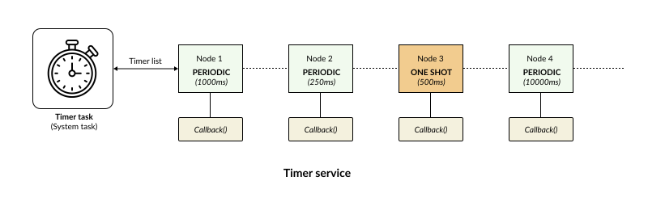
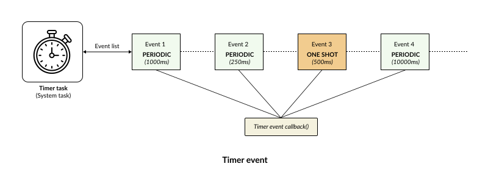

Timer
{kind=link}
A Timer is a critical component in any software system. In an RTOS, timers are commonly used to execute time-based operations such as:
Periodically reading sensors.
Checking connection status.
Sending heartbeat signals.
Handling timeouts.
Executing background tasks.
In addition to providing a standard timer service like conventional RTOS frameworks, RK integrates a Timer Event Service. This allows the system to automatically dispatch events to tasks based on a preconfigured time interval.
Thanks to this feature, applications can be easily developed following the Event-Driven model without requiring tasks to manually manage their own software counters.
This section covers two main topics:
Timer Service
Timer Event
Timer Service
{kind=link}

The timer service allows you to register a callback function that will be executed when the timer expires. When initializing a timer, the user must provide: Timer name, timer type, timeout duration, and the callback function.
RK will then begin tracking the time for that specific timer. Once the timer expires, the registered callback is invoked.
RK supports two types of Timers:
TIMER_ONE_SHOT: The callback function is invoked exactly once, after which the timer manager automatically deletes the timer instance. This type of timer is typically used for: Connection timeouts, Response timeouts, One-time execution delays, etc.
TIMER_PERIODIC: The callback function automatically reloads and resets its execution counter after each expiration, running indefinitely at fixed intervals. This type of timer is typically used for: Periodic sensor sampling, Broadcasting heartbeats, System status monitoring, Routine background maintenance tasks, etc.
Timer Event
{kind=link}

While timer callbacks are a ubiquitous mechanism in RTOS development, there are many scenarios where an Event-Driven application does not need to execute a callback function directly.
Instead, the application simply requires an event to be dispatched to the corresponding task upon timer expiration. To address this need, RK introduces the Timer Event Service.
A Timer Event is a unified synergy of three concepts: Timer, Mailbox & Event Post
When a Timer expires, the system automatically instantiates a Message and posts it directly into the destination task’s mailbox. This allows the application to remain strictly compliant with the Event-Driven architecture.
Concretely, this implies that:
The event is enqueued into the destination task’s mailbox.
The task processes the event using its standard receive message routine.
It inherits the exact same priority scheduling and mailbox waiting mechanisms as events dispatched from other tasks or Interrupt Service Routines (ISRs).
From the perspective of the receiving task, there is absolutely no distinction between an event triggered by another task and an event triggered by a timer event. Consequently, the Timer Event seamlessly integrates into the Event-Driven architecture of RK.
This simplifies application design, enhances scalability, and significantly reduces the overhead of manual time management within individual tasks.